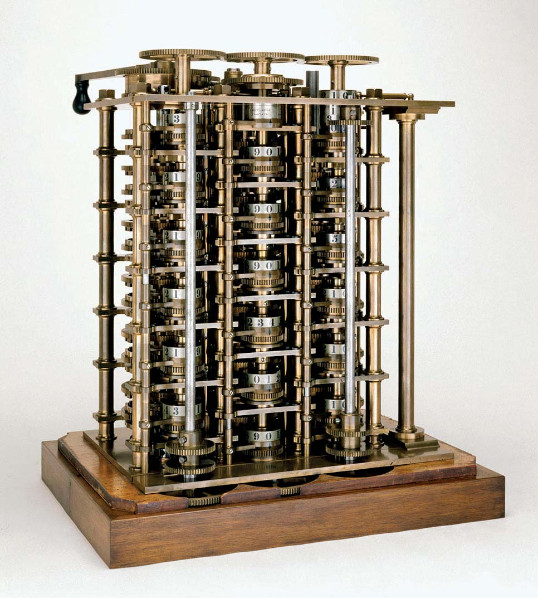

 In 1823, Babbage enlisted the help of Joseph Clement to build a prototype difference engine. Clement set high standards for himself, but his machine tools were especially sophisticated. He could charge for their construction and also own them under the customary rules of business at the time. Around 1831, he and Babbage had a falling out over expenditures.
The Museum of the History of Science in Oxford has several elements of the prototype. The "first difference engine" was born from this prototype. It was left incomplete, and the completed section may be seen at the Science Museum in London. This first difference engine would have had 25,000 pieces, weighed fifteen short tonnes (13,600 kg), and stood 8 feet (2.4 metres) tall.
Despite the fact that Babbage was provided with adequate cash for the project, it was never finished. He subsequently (1847–1849) drew comprehensive designs for an improved version called "Difference Engine No. 2," but the British government refused to pay him. In 1989–1991, his design was built utilising his designs and 19th-century manufacturing tolerances. The initial computation was done at the Science Museum in London, and the results were 31 digits.
The Science Museum finished the printer Babbage envisioned for the difference engine nine years later, in 2000.